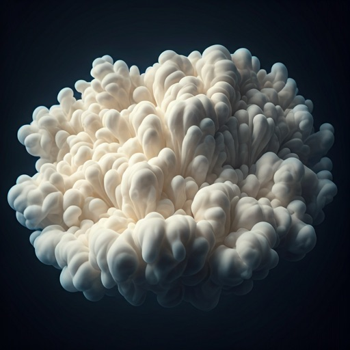

A sensory-rich interface simulating the tactile weightlessness of morning mist. Designed for the discerning eye, bridging the gap between digital precision and organic serenity.
Experience the interplay of diffused golden light and soft white gradients. Each element is crafted to feel as if it's floating within a sunlit haze.
Capturing the exact moment sunlight hits ice crystals within cirrus formations.
Dynamic interfaces that respond with organic deceleration and fluid-like elasticity.
Small, precise inner shadows that give buttons and cards a sense of physical weightlessness.
Advanced backdrop-filter applications that simulate light passing through water vapor.
Subtle yellow and amber glows that activate when interacting with primary elements.
